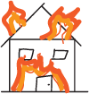

About the Project
Trash of the Week Project began as a way to look more carefully at the objects that usually are ignored. A crumpled can, coffee cup lid, torn snack wrapper, or dented takeout container may seem unimportant, but each of these items are telling of their original owners. This site treats trash not just as garbage, but as a means of recording everyday life. By collecting, photographing, and describing discarded objects, the project asks viewers to slow down and consider what these items say about consumption and the people who use them.
The weekly format helps me stay accountable to myself and lets me see how my trash progresses with time. The longer I work on this project, the more trash I will have of myself in the past, almost acting as a time machine for myself and for others to see. In that way, the project works almost like a mini archive of objects that are bound to be forgotten.
Let's talk more about the inspirations of this project. Sarah Newman's "An Archaeologist Talks Trash" was an article published on the UChicago News. You can find more about UChicago News here. The article starts by introducing her as an assistant professor at UChicago. Newman's article aims to reframe how trash should be looked at. She makes the point that seeing trash as "trash" varies by perspective. For example, in El Zotz, she discovered deposits of "waste" that are archaelogical artifacts of incredible value. Even though it might've been waste to the ancient Maya, it is very valueble to the people of today. That's really the main hitting point of the article. In the same way, TWP is inspired by that because TWP aims to draw meaning from everyday trash that one might simply throw away.
Another perspective that inspired this project is Karen Trefzger's "The Essential Decision: Keep or Toss?" that offers insight from someone who journals about her minimalist lifestyle among other things. For reference, here is more about minimalism. This article is specifically one among many in her collection of articles titled "Maximum Gratitude, Minimal Stuff". Clearly, this is someone who enjoys making the most of the things they have. The main inspiration I took from her article is the process of deciding whether or not to throw something out. She does a good job expressing the emotion we all feel when we are deciding whether or not we want to throw something out. This really grabbed my attention and made me feel connected to what she was saying. Later in the article, her "10 questions to give you clarity" really also helped me when I was making my own decisions of what to throw out for the week. What I ultimately love the most about this article is the fact that its minimal, and gets straight to the point, just like the title of her articles.
Lastly, let's talk about Vik Muniz's "Reframing Trash Into Art". Vik Muniz is a contemporary artist (for those who don't know much about contemporary art) that sought to find meaning within trash as well, except with the perspective of an artist rather than an archaeologist. Muniz himself was inspired by a very large landfill in Rio de Janeiro called Jardim Gramacho. After a fire destroyed the National Museum of Brazil, Muniz thought to himself what the museum and the landfill had in common in terms of how they could be reduced to nothing in mere moments. Ultimately, he created multiple series of art inspired by the burning of the museum. Muniz concludes by saying his artistry can shapeshift into anything he wants and that there is always meaning to be discerned even if the original source material no longer exists. This related back to the TWP directly as the TWP finds the hidden meaning of what is being thrown away, digitalized so that it may be remembered forever.
